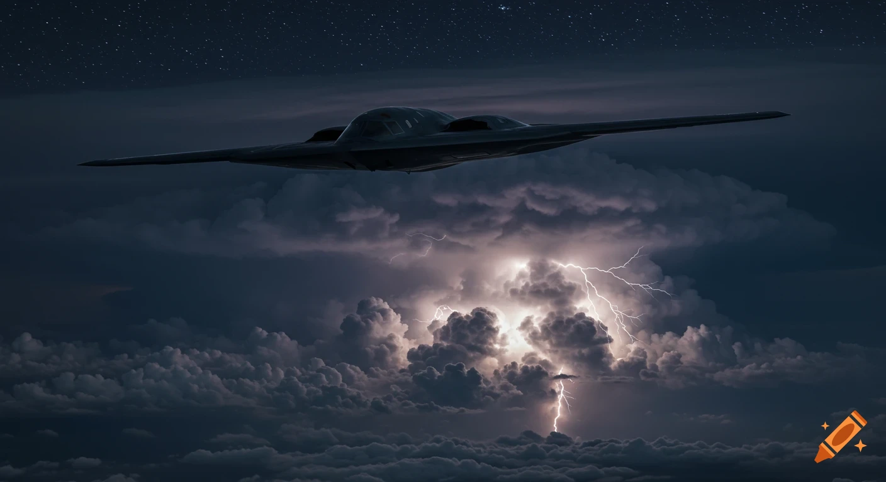
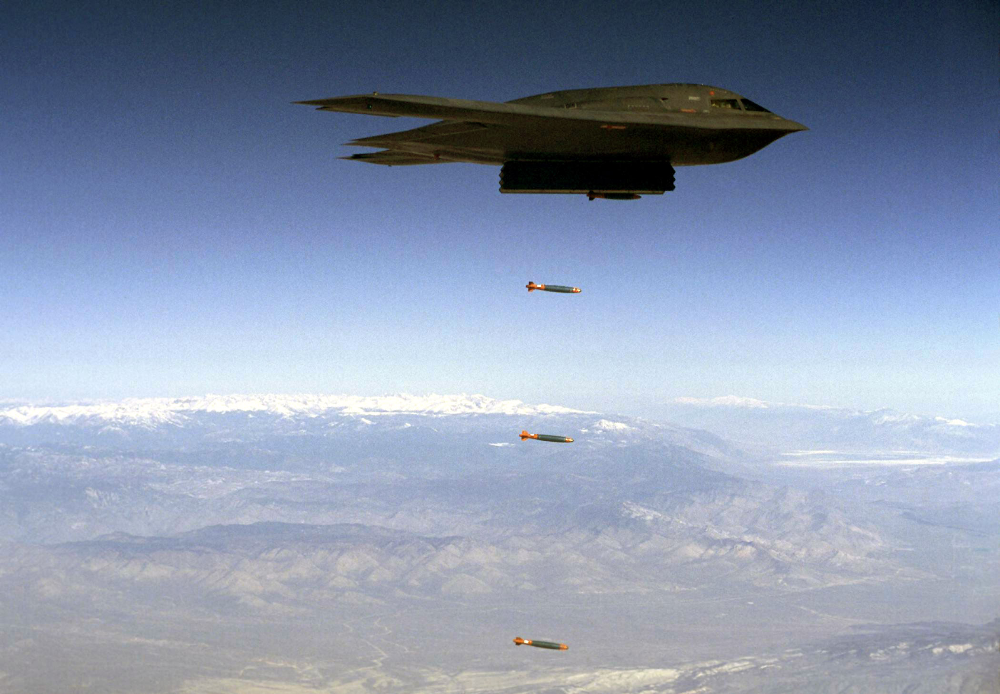
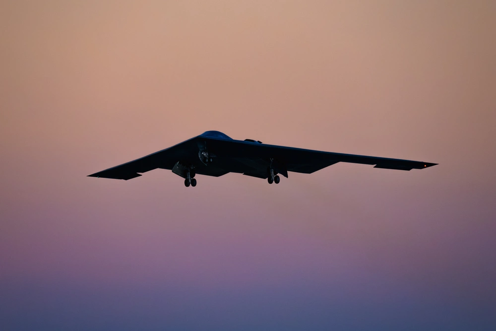
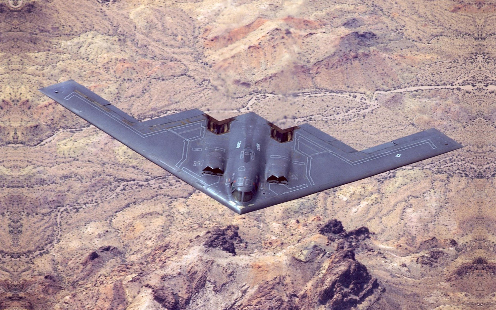
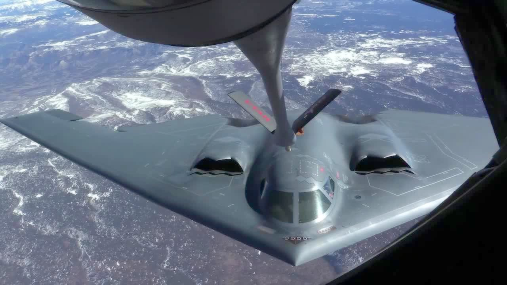

Personne ne l'a vu arriver. Personne ne l'a vu repartir.
Depuis sa mise en service, le B-2 Spirit a marqué l'histoire militaire par des missions impossibles : frapper n'importe où sur le globe, sans jamais être vu. Voici trois de ses opérations les plus marquantes, de la plus récente à la plus ancienne.

Dans la nuit du 21 au 22 juin 2025, sept B-2 Spirit décollent de la base de Whiteman, dans le Missouri, pour l'opération Midnight Hammer. Pour tromper l'ennemi, d'autres B-2 leurres partent vers le Pacifique. La vraie formation file vers le Moyen-Orient, ravitaillée en vol au- dessus de l'océan.

Après plus de dix-huit heures de vol, les B-2 atteignent l'Iran sans être repérés. Ils larguent quatorze bombes anti-bunker GBU-57, dont douze sur le site de Fordow, enfoui sous environ quatre-vingts mètres de roche. Conçues pour percer la montagne avant d'exploser, elles frappent les installations souterraines.

Mission accomplie, les appareils repartent aussitôt vers les États-Unis. Au total, plus de trente heures de vol aller-retour. À aucun moment les défenses iraniennes n'ont détecté la formation. Personne ne les a vus arriver, personne ne les a vus repartir.

Le 18 janvier 2017, deux B-2 décollent de Whiteman et frappent un camp d'entraînement de l'État islamique à une trentaine de kilomètres au sud-ouest de Syrte. Ils larguent ensemble cent-huit bombes guidées JDAM, neutralisant environ quatre-vingt-cinq combattants. Mission de trente heures aller-retour, avec plusieurs ravitaillements en vol.

Après les attentats du 11 septembre 2001, le Spirit of America et cinq autres B-2 sont les premiers à entrer dans l'espace aérien afghan lors de l'opération Enduring Freedom. La mission dure quarante-quatre heures : c'est le plus long vol de combat de l'histoire de l'aviation. Décollage du Missouri, traversée du Pacifique en vingt-quatre heures, frappe sur les cibles talibanes, puis escale technique à Diego Garcia avant de repartir.